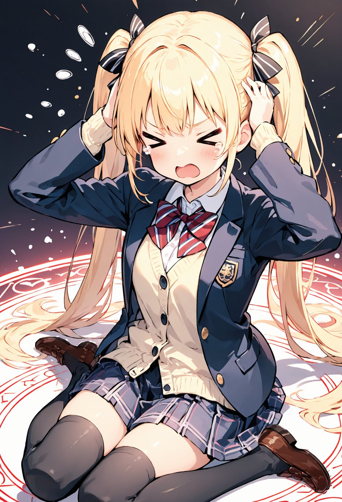
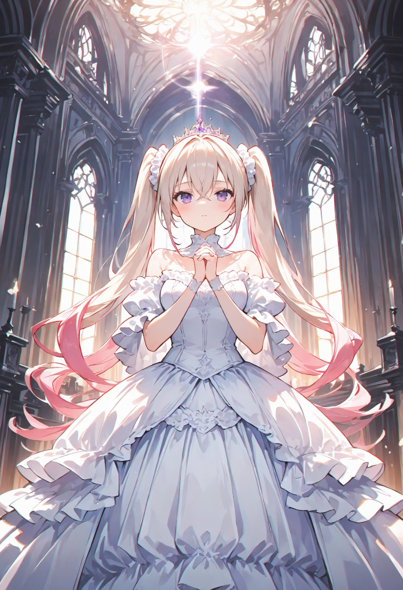

第2話
気がつけば、美桜ちゃんは硬い床の上に倒れていた。
「……いたたたた、ここどこ？」 起き上がろうと手をつくと、冷たい石の感触が伝わってくる。 視線を落とすと、床には美しく輝く魔法陣が描かれていた。 幾何学模様と不思議な文字が輝き、淡い光を放っている。
「え、なにこれ……魔法陣？」 思わず呟いた美桜ちゃんは周囲を見渡した。 目に入るのは豪華な宮殿の装飾だ。

美桜ちゃんの目の前には、まばゆい光に包まれた少女が立っていた。 彼女は純白のドレスを纏い、繊細なレースと装飾が光を受けてきらめいている。 髪には小さなティアラが輝き、プラチナ色の髪に薄ピンクの毛先がふんわりと揺れていた。
「伝説の勇者さま……！」
荘厳な大広間の空気を切るような彼女の声が、美桜ちゃんの耳に届く。 その声と姿に、一瞬、胸がざわつく。
「え、ちょっと待って、美優ちゃん！？なんでそんな格好してんの！？」 美桜ちゃんが叫ぶと、少女は首を傾げた。 どこからどう見ても友達の美優ちゃんそっくりだった。 ただし、学校の制服ではなく、豪華絢爛なドレスを着ているのが異様だ。

だが、目の前の少女は不思議そうに首を傾げ、優雅にスカートの裾をつまんで一礼した。
「私はミユ、この国の姫です。そして、あなたをこの世界に召喚した者です」 ミユ姫は静かにそう告げた。美桜ちゃんの困惑をよそに、続ける。
「あなたは、伝説の勇者としてこの世界を救うために召喚されました」 その言葉に、美桜ちゃんの思考は完全に停止した。
― この話はここまで ―